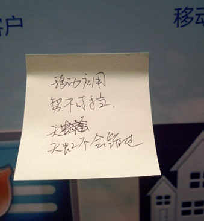

| 金蝶新闻 | |
|
|


当客户的抱怨遭遇“指尖上的奇迹――移动应用”时，高端ERP太难用这码事便迎来了柳暗花明的一天。在8月8日的金蝶云管理新产品发布会上，一位来自在国内知名零售集团的客户兴奋地留下一张便签：“移动应用，势不可挡，天虹不会错过”。

金蝶云管理新产品发布会上来宾留下的一张便签
金蝶这场声势浩大的发布会，因移动应用新品的登场而倍添人气。一部金蝶移动应用的“趣闻录”，经金蝶中国助理总裁兼研发中心副总经理隋同建之口风趣道来，让兴致高昂的来宾们如临其境地感受到移动应用的非凡乐趣。隋同建说，移动互联、社交网络、云计算和ERP结合在一起会发生化学反应，诞生社交化ERP，它能够让用户随时随地，像玩游戏一样去使用ERP，再也不会觉得用ERP真烦、真难。
高管眼里的社交化ERP
社交化ERP对高管来说，可谓是如获至宝。看看企业高管的三大工作：审批、管人、看报表。以往的审批工作繁重琐碎，现在有了金蝶EAS移动工作流后，高管们可以随时随地利用零散的时间来审批流程，候机室里、马桶上、会议中、临睡前，让猴急的下属不再背后抱怨。第二管人。管得人越多，就越难记住每个人的近况。但金蝶EAS移动HR就像高管的贴身秘书，帮你记住每位下属的职等情况、任职经历、绩效信息、以及所有系统在录的个人情况。与员工聊天前5分钟，在茶水间用手机就能了解个大概。还有报表。面对厚重的报表、死板的数据，高管真能埋在办公桌前一一看完吗？现在金蝶移动BI，用各种各样的图形让报表变得生动起来，而且随时随地触手可及，以后看报表就不是个体力活了。
客户眼里的社交化ERP
那么社交化ERP又能为客户提供多“有趣”的服务呢？比如，金蝶EAS的移动订单，可以让企业的客户、经销商通过手机随时下单，并且实时跟踪订单状态，这样就不用反复追问订单的情况，节省了双方的沟通成本。还有金蝶EAS的移动客户，能够让销售人员随时掌握客户的动态，联系方式、历史交易、信用信息等以后就不用手写在小本子上；销售人员还可以直接帮助客户订货、跟单，客户的满意度一定大增。此外，金蝶新出品的移动售楼必定是房地产商的销售利器，它可以帮助置业顾问展示项目效果图、截面图、户型图、以及项目周边的优势，还可以智能完成选房计价的整个过程，这样的高端服务，哪个潜在购房者不喜欢呢？
社交化ERP的给力“怪功能”
除了上述的必备移动应用，社交化ERP还蕴藏着无限可能，即使是一些“怪功能”也会产生出其不意的好效果。比如“附近的同事”、“附近的客户”，当你不知道请谁吃饭好的时候，这个“怪功能”能帮你做出最优选择。还有社交化工具比如微博的集成，让每一流程涉及的人员，能够在ERP中直接交流，比如以往一份报表需要专门用邮件发给领导，但现在在社交化ERP中，可以直接把这份报表@领导，这样就让过去人际沟通与流程处理相互隔离的局面得到极大改善。
隋同建介绍，传统的ERP是以系统为核心的，太过重视企业价值最大化，却忽视了用户的体验，是再难也要逼着你用。但社交化ERP转变为以人为核心，强调用户体验和满意度，强调人的共享与协作，强调用户的自发使用。“金蝶就是要让高端ERP娱乐起来，变得非常好用。ERP的引擎要非常强大，但再强大也不要牺牲跟用户的交互。”